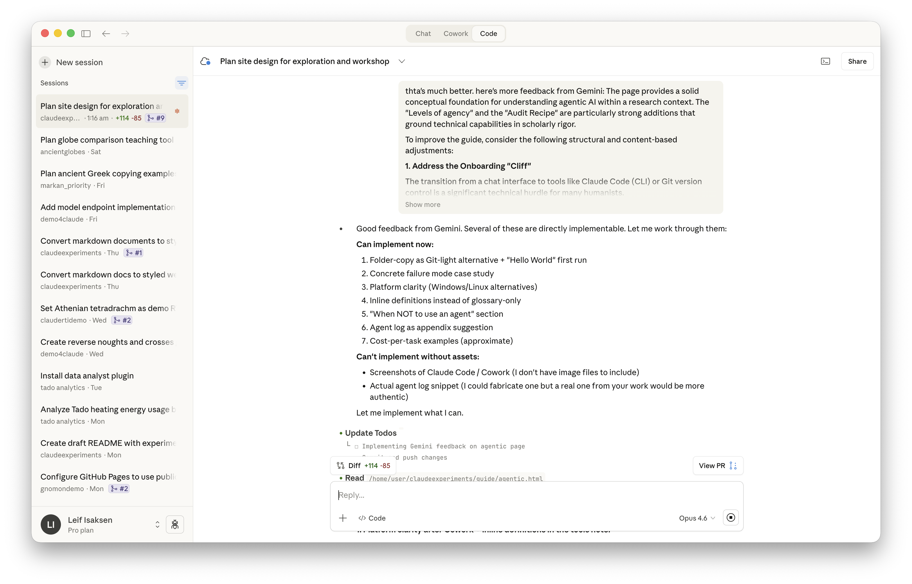

February 2026 · Part of the LLM Guide for Humanities Scholars
Last updated: February 2026
If you only use chat-based tools: Read What is agentic AI? for the concept, then skip to Risks and limitations — the rest covers tools you may not need yet.
Many LLM interactions are conversational and iterative—you ask a question, read the answer, refine your question, and go back and forth. But these exchanges are still essentially talking only. The AI reads what you write and produces text in response. It doesn’t touch your files, change your data, or act on anything beyond the conversation window.
Agentic systems add the ability to take actions in the world of your project: reading and rewriting files, running commands, searching the web, and iterating until a goal is met. You describe what you want in plain language—“find all mentions of magistrates in this dataset, translate them, and produce a summary table”—and the agent plans a series of steps, carries them out, checks the results, and adjusts its approach based on what happened. It has a loop, not just a single response.
This is a qualitative shift. A chat answer is self-contained: you read it and decide whether it’s useful. An agentic workflow produces side-effects—files modified, new files created, data transformed, commands executed. The agent isn’t just answering your question; it’s trying to solve a problem, and the evidence of its work is scattered across your project, not neatly contained in a single response.
To take a concrete example: a chat LLM can translate a Latin inscription if you paste in the text. An agentic system can, in principle, search a directory of photographs for inscriptions matching criteria, extract text from images, translate them, cross-reference with a database, and compile results—all in one workflow. But ‘in principle’ deserves emphasis. This works best when your images are well-organised (clear filenames, consistent folders, legible text); otherwise the agent often needs you to supply a small set of worked examples and accept that not everything will be found. The potential is real, but so are the prerequisites.
The rest of this page explains how to approach these tools with the right mix of ambition and caution.
Agentic AI is not a binary category—either chat or full autonomy. In practice there is a spectrum, and choosing where you sit on that spectrum for any given task is one of the most important decisions you’ll make. Most people should start near the cautious end and move toward more autonomy only as they gain experience and confidence in the tool.
Chat only (no side-effects)
The AI reads your input and responds with text. Nothing on your computer changes. This is what you’re already familiar with from ChatGPT or Claude.
Tool use with confirmation
The agent proposes an action—“I’d like to read the file inscriptions.csv”—and waits for you to approve before proceeding. You stay in the loop at every step. Slow but safe.
Batched tool use
The agent plans a small sequence of steps, carries them out, and then reports back before starting the next batch. You review periodically rather than at every step.
Autonomous with guardrails
The agent works through a task independently, but within constraints you’ve set: only files in a specific folder, no deletions, no internet access, and so on. You review the results when it’s finished.
Fully autonomous
The agent has broad access and makes its own decisions. Appropriate for low-stakes tasks where you can easily undo the results. Rarely appropriate for anything involving research data, sensitive materials, or work you’ll need to defend.
The right level depends on the stakes. Reformatting a bibliography? Autonomous with guardrails is probably fine. Processing unpublished fieldwork data? Tool use with confirmation, and careful review of what the agent reads and writes. There is no ‘correct’ default; the point is to choose deliberately rather than accepting whatever the tool offers.
Several agentic tools exist as of early 2026. The landscape is changing quickly, so the specific products matter less than understanding the general pattern: language models combined with tool access and iteration loops, grounded in your own files rather than general knowledge.
A note on terminology: This section uses some technical language. A ‘command line’ (or CLI) is a text-based way of giving instructions to your computer by typing commands rather than clicking icons. An ‘API key’ is a password-like code that lets software access a service on your behalf. An ‘IDE’ (integrated development environment) is a specialised text editor designed for writing code. You do not need to master this vocabulary to understand what these tools do; it helps mainly if you want to try them yourself.
Claude Code is Anthropic’s agentic tool, available through the command line (a text-based interface on your computer), through code editors, and on the web. You describe what you want in plain language; it reads your files, writes and runs code, and iterates. Your files stay on your machine (or in your browser session) unless you explicitly share them, and you can undo changes. Requires an Anthropic API key or Max subscription.

Cowork is a research-preview interface in Claude Desktop (currently macOS only) that brings agentic workflows to non-coding tasks—document analysis, research, and structured writing. It is designed for people who want agentic capabilities without working in a development environment. If you’re on Windows or Linux, the closest equivalent is Claude Code on the web (which runs in a browser) or an AI-native editor like Cursor.
The broader landscape includes IDE-integrated agents (like Cursor), platform-integrated assistants (like GitHub Copilot, which now spans code completion, chat, and increasingly agent-like workflows within GitHub), and hosted autonomous agents (like Devin from Cognition). These are primarily aimed at software developers, but the underlying capabilities—file manipulation, structured output, iterative problem-solving—are the same capabilities that make agentic tools useful for research.
You don’t need to be a programmer to use agentic tools. But you do need a basic mental model of what the agent can touch—files, folders, the web, and in some cases your credentials or accounts—and how you’ll check what it changed. Think of it less like using a spreadsheet and more like delegating to a research assistant who works at great speed but has no common sense about what matters to you and cannot be held accountable for mistakes.
1. Start small. Give the agent a contained, well-defined task before attempting something complex. “Convert this bibliography from Chicago style to Harvard” before “restructure my entire project directory and update all references.” Small tasks let you calibrate the tool’s strengths and failure modes.
2. Keep a safety net. Agents modify files. If the agent makes mistakes—and it will—you need a way to see what changed and undo it. The gold standard is version control: a system (most commonly Git) that records every change to your files, so you can compare the state before and after and roll back if needed. If Git feels like a bridge too far for now, a simpler starting point is to duplicate your entire project folder before letting the agent work. It’s not as elegant, but it means you always have a clean copy to fall back on. Save a checkpoint before giving the agent significant tasks, whichever method you use.
3. Review everything. Don’t assume the agent got it right because the process completed without errors. An agent can produce work that looks correct, runs without problems, and still contains substantive mistakes. Spot-check results against source data. If you can’t verify it, you can’t trust it.
4. Be specific about constraints. “Use only the sources in this folder.” “Don’t modify files outside this directory.” “Check with me before deleting anything.” The clearer your boundaries, the fewer surprises.
5. Iterate, don’t fire and forget. The best results come from working with the agent: describe what you want, review the output, refine your instructions, and repeat. A single pass rarely produces exactly what you need.
If you’ve never used an agentic tool before, here is a low-stakes task to try. Open Claude Code (on the web, or in a terminal) and point it at a folder containing a few text files—notes, drafts, anything you don’t mind it reading. Then type something like:
“List all the .txt files in this folder. For each one, count the number of words and produce a summary table as a new file called word-counts.csv.”
The agent will ask to read your files (approve this), then create the CSV. Check the result against a manual word count for one or two files. You’ll see the basic pattern: you describe the goal, the agent proposes actions, you approve, it executes, and you verify. The whole thing should take under five minutes and gives you a feel for the interaction model before you commit to anything more ambitious.
What you’ll produce: A CSV file with filenames and word counts — a tangible artefact you can verify.
How to check it: Open the CSV. Manually count the words in one or two of the files. Do the numbers match? Are all files accounted for?
Common pitfalls: Approving actions without reading what the agent proposes to do. Not saving a snapshot of your folder before starting. Assuming one correct file means all files are correct — check at least two.
Reviewing agent work is a skill, and it helps to have a repeatable method rather than just an admonition to ‘check everything’. The following pattern works for most tasks—whether the agent is cleaning data, transforming files, building a tool, or producing structured output:
Before: Save a snapshot or commit. Know the state of your files before the agent touches them.
Constrain: Limit what the agent can access—a specific folder, specific file types, a defined scope. Ask it to tell you its plan and success criteria before it begins.
Sample first: Run on a small subset (1–5 items). Check the results by hand against your sources. Fix problems before scaling up.
Run: Let the agent work on the full task.
Review: Compare the before and after states. Spot-check a defined sample (not just the ones that look right). For data work, check edge cases and items the agent might have found ambiguous.
Record: Save the instructions you gave, the agent’s log of actions, and the exact state of your files before and after. This is your provenance record—the equivalent of a methods section for agent-assisted work.
This may seem laborious, but it’s the difference between ‘I used an AI tool’ and ‘I can account for what the AI tool did and verify its output’. For anything you intend to publish, present, or share, the second is the minimum standard. For formal publications, consider depositing the agent log and your instructions in a data repository (such as Zenodo) as part of a technical appendix, much as you might share a script or dataset.
One of the most effective ways to improve the quality of AI-assisted work is to use more than one model. If you develop a piece of writing, a translation, a data transformation, or any other output with one LLM, passing it to a different model for review can catch problems that neither you nor your primary tool noticed.
This is not because any single model is reliably ‘better’—it is because different models have different strengths, different training data, and different failure modes. Where one model makes a confident error, another may flag it as uncertain. Where one model defaults to a particular framing, another may suggest an alternative you hadn’t considered.
There are several reasons to build this into your workflow:
How to do it in practice. The simplest approach: complete your work with your preferred model, then open a new conversation with a different model (Claude, ChatGPT, Gemini, or others) and paste in the output with a prompt like “Please review this critically. Identify errors, unclear passages, unsupported claims, and anything that could be improved.” For more structured review, you can ask the second model to adopt a specific role: “Review this as a specialist in [your field] who is sceptical of AI-generated content.”
For agentic work specifically—where the output is code, transformed data, or a set of file changes rather than prose—you can ask the reviewing model to check the logic, look for edge cases, or verify that the output matches the specification you gave the original agent.
A note on consensus vs. corroboration: If two models agree, that increases confidence somewhat, but it is not validation. Models trained on overlapping data make overlapping errors. Agreement on a factual claim means it is well-represented in training data, not that it is true. Cross-model review is most valuable when models disagree—that disagreement tells you exactly where to focus your own expert attention. See the verification strategies on the Use Cases page for more on this point.
This guide was itself developed using this approach: drafts produced with one model were reviewed by others (ChatGPT and Gemini), and the feedback was used to identify weaknesses, missing perspectives, and passages that would confuse the intended audience. The multi-model review caught problems—developer jargon that would lose humanities readers, over-promises about tool capabilities, factual errors about specific products—that neither the author nor the primary model had noticed.
The following projects were created using Claude Code, with varying degrees of human involvement. For each, note the mix of agent and human labour: the agent handles technical execution, but the intellectual direction, quality judgement, and domain knowledge come from the human. See the full portfolio for more detail.
QGIS Tutorials for Ancient History
Standard GIS tutorials redeveloped for ancient history case studies. The agent handled technical adaptation and formatting; the human provided the pedagogical brief, disciplinary context, and quality review.
A comic short story collaboratively authored with an LLM (January 2025), imagining the consequences of a Classicist and a Theologian discovering an unexpected form of intelligence.
Interactive demonstration of latitude calculation using a gnomon. Developed in 1–2 hours. The human described the concept; the agent wrote the code; the human tested and iterated.
A web-based viewer for Reflectance Transformation Imaging files, allowing interactive exploration of artefact surfaces without specialist software.
a prototype Latin grammar practice platform with diagnostic testing, targeted exercises, progress tracking, and improvement reports. A more substantial project (several session) showing how agents have the potential to build interactive educational tools. A full implementation might take 1-2 days of collaborative work with an agent
Interactive map comparing place references across the Ravenna Cosmography and Peutinger Map. The data and principal coding were done manually over three months; AI-assisted improvements (bugfixes, interface work) followed in September 2025. An example of agentic tools augmenting existing manual work rather than replacing it.
Ancient Greek and Islamic globes with adjustable orientation. Original coding took several weeks (summer 2024); consolidated into a single framework with new features added using AI in September 2025.
Revamped version of a tool for visualising place references in Herodotus’s Histories.
This guide itself
The LLM Guide for Humanities Scholars was developed using Claude Code. The human author provided the brief, editorial direction, and all scholarly judgements. The agent handled page structure, code, drafting prose to specification, and iterating on design. A concrete example of agentic assistance applied to creating educational materials.
Chat output is straightforward to evaluate: you read it and decide if it’s good. Agentic systems are harder to validate because the output isn’t a single text but a trail of file changes, computations, and decisions. This introduces risks that don’t apply to chat.
Not every task benefits from agentic tools. Prefer ordinary chat—or manual work—when:
It helps to see a concrete example. In the course of building this guide, an agent was asked to add a navigation link to all pages. It correctly identified the eight files that needed updating, but the method it used (a text-replacement command) also matched a line inside the page content of the index page, inserting a raw HTML link into the middle of a paragraph. The result looked like this in the browser: a stray ‘Agentic AI’ hyperlink floating between two sentences of the introductory text. The agent reported success; the error only became apparent on visual review.
This is typical of how agentic failures occur: the agent completes its task, reports no errors, and the problem is subtle enough to slip past a cursory check. It’s why the audit recipe exists—and why ‘review everything’ means looking at the actual output, not just the agent’s summary of what it did.
When an agent modifies twenty files, you can’t review each change as easily as reading a single response. Version control and comparison tools become essential, not optional. For large modifications, the verification work can be substantial—sometimes more than the time you saved by using the agent in the first place.
Agents can be overzealous. An agent asked to fix one problem may ‘helpfully’ refactor things you didn’t ask it to touch, add features you didn’t request, or make well-intentioned changes that break something else. The simplest guardrails: work in a fresh copy of your data, restrict the agent to specific folders and file types, and require it to check with you before making changes beyond the original brief.
If the agent searches the web or literature as part of its work, it will confidently merge sources, sometimes misattribute claims, and silently smooth over uncertainty in its prose. This is a scholarly credibility risk. Require the agent to produce a sources list (URLs, references, DOIs where applicable), quote small excerpts where relevant, and separate ‘what the source says’ from ‘my inference’. Otherwise you will get plausible synthesis with weak provenance—exactly the kind of output that looks authoritative until someone checks.
Agentic workflows consume significantly more resources than simple chat, because the agent reads files, makes many internal calls, and iterates. Costs scale with three things: the number of files the agent reads, the number of iterations it takes, and whether it searches the web. A simple chat query might cost pence; an agentic task that seems straightforward can cost several pounds. Budget accordingly for large or iterative tasks.
Before giving an agent access to your working directory, apply the data boundary rules: no confidential, embargoed, or personally identifiable material. Check whether the tool sends files off your device. Remove credentials or access tokens from the working directory. Set the agent to read-only where write access is not needed. If any of these gives you pause, restrict the agent’s access or work on a copy of the data rather than the original.
The more an agent does autonomously, the harder it is to maintain the oversight that makes the output trustworthy. This tension doesn’t have a clean resolution. A fully autonomous run might finish in minutes; a step-by-step supervised run might take hours but catch errors the autonomous version wouldn’t. Choose based on the stakes: for low-risk tasks, speed is reasonable; for anything you’ll publish or share, invest in oversight.
Running the same agentic task twice can produce different results, because the agent’s decisions aren’t fully deterministic. For research work you’ll need to defend, this matters. Practical mitigation: save the exact instructions you gave, the agent’s log of actions, and the state of your files before and after (as a version-control commit or snapshot). Treat the agent run like a recorded method—someone else should be able to see what you did, even if they can’t reproduce it identically.
You can observe what an agent does—the files it reads, the commands it runs, the output it produces. But understanding why it made specific choices is harder. It might make a sensible decision for inscrutable reasons, or a poor one that seems reasonable until you see the consequences. This is inherent to how language models work, but it becomes more consequential when the agent is modifying your files rather than just generating text you can read and discard.
These limitations don’t make agentic tools useless. They make them tools that require care, a method for verification, and honest assessment of when the oversight burden outweighs the benefits.